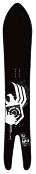
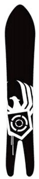

|
|
|
Тест-драйв реальной фрирайдной доски
Испытуемый экземпляр в течение полугода устрашающе висел на стене и наводил ужас своими размерами на всех приходящих в гости. Имя ему - Nitro Saber P.O.W. Полноценные шестидневные испытания проходили на Мамае, в начале января. Теперь можно что-то подытожить. Доска рулится! Точнее: доска хорошо рулится, если держать
скорость. Исключение - плотный задутый снег, с ним столкнулись на гребне,
спускаясь с вершины Мамая в висячий цирк. Раздвоенный хвост нагло цеплялся
всеми четырьмя кантами. Разозлюсь и сточу на хрен напильником. В общем, паудерным доскам на Мамае быть! На зависть джиберам
и фристайлерам. А под стоячий рэйл мы всегда успеем.
Январь 2007. Пестов Алексей. Иркутск. |
  Nitro Saber P.O.W. |